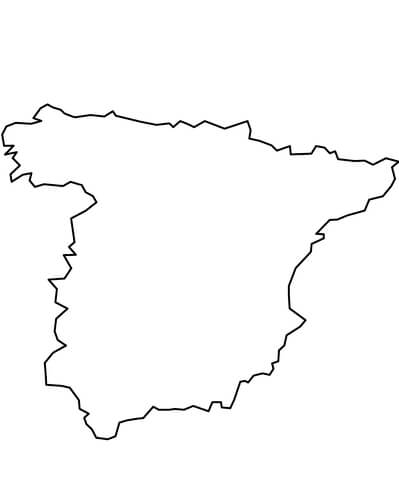

Envíos nacionales

Tu pedido sale el mismo día o al siguiente de recibir la confirmación del pago y te llega en 24-72 horas.
Las cervezas viajan en las mejores condiciones posibles con una empresa profesional y eficiente.
Tarifa plana 4,99€ (Península). Portes gratis a partir de 65€
No se admiten pedidos fuera de la Península.
Cervezas Personalizadas

Ofrecemos una gran variedad de cervezas que abarca una enorme gama de estilos y orígenes
para que puedas escoger entre aquellas que más te gusten, y además puedas dar un toque personal.
Pack Regalos

Los packs de cervezas artesanas son excelentes para regalar a los amigos que buscan brindar con los productos más especiales
y para los cerveceros que quieren probar cervezas variadas y, lo mejor de todo, los packs siempre tienen mejor precio.
Disponemos de diferentes tamaños de packs: mínimo 6 cervezas - máximo 32 cervezas
Nuestro Servicio de Atención te atenderá encantado y resolverá todas tus dudas. Si no sabes qué escoger, pregúntanos.
Talleres y cursos de elaboración de Cerveza Casera
En este taller aprenderás cómo hacer cerveza artesana en casa paso a paso en un ambiente muy distendido, rodeado de apasionados de la cerveza como tú.
Conocerás el proceso real de elaboración de cerveza, y adquirirás los conocimientos técnicos necesarios para fabricar
tu propia cerveza desde ingredientes naturales, grano, lúpulo y levadura, con un equipo “casero”.
Todos los materiales los aportamos nosotros.No son necesarios experiencia ni conocimientos previos.
Si tienes alguna duda, Nuestro Servicio de Atención te atenderá encantado y resolverá todas tus dudas.